BPMN — Toàn cảnh ứng dụng WMS
Một phiên làm việc: chọn một chức năng độc lập, xử lý rồi trở về. Không phải chuỗi bắt buộc Nhập → Xuất → Kiểm kê.
Source ch?nh s?a ? PNG ? SVG / ph?ng to
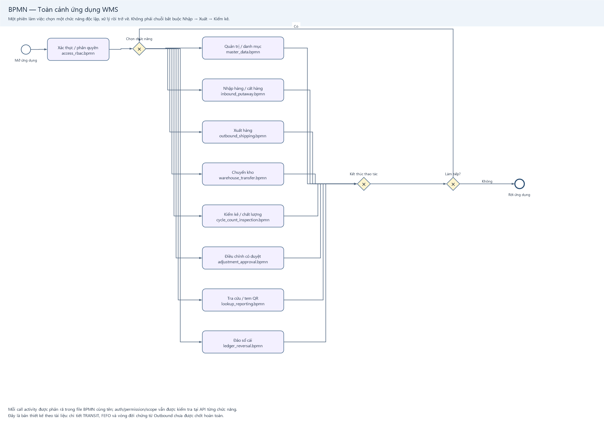
- Mỗi call activity được phân rã trong file BPMN cùng tên; auth/permission/scope vẫn được kiểm tra tại API từng chức năng.
- Đây là bản thiết kế theo tài liệu: chi tiết TRANSIT, FEFO và vòng đời chứng từ Outbound chưa được chốt hoàn toàn.
BPMN — Nhập hàng và cất hàng
Thiết kế hệ thống theo bộ tài liệu 05/10 + contract tuần 3 phần Nam; mỗi dòng nhận/cất một lần.
Source ch?nh s?a ? PNG ? SVG / ph?ng to
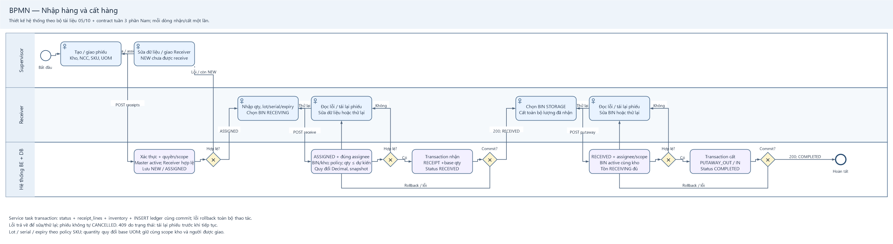
- Service task transaction: status + receipt_lines + inventory + INSERT ledger cùng commit; lỗi rollback toàn bộ thao tác.
- Lỗi trả về để sửa/thử lại; phiếu không tự CANCELLED. 409 do trạng thái: tải lại phiếu trước khi tiếp tục.
- Lot / serial / expiry theo policy SKU; quantity quy đổi base UOM; giữ cùng scope kho và người được giao.
BPMN — Điều chỉnh tồn kho có phê duyệt
Inspector tạo snapshot → submit → người có ADJUSTMENT.APPROVE/REJECT trong kho xét duyệt; không tự duyệt.
Source ch?nh s?a ? PNG ? SVG / ph?ng to
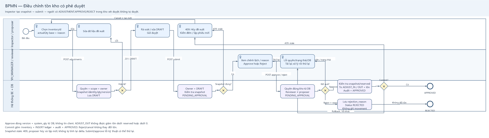
- Approve dùng version + system_qty từ DB, không tin client. ADJUST_OUT không được giảm tồn dưới reserved hoặc dưới 0.
- Commit gồm inventory + INSERT ledger + audit + APPROVED. Reject/cancel không thay đổi tồn.
- Snapshot stale: 409, proposer hủy và lập mới; không tự tính lại delta. Submit/approve lỗi kỹ thuật có thể thử lại.
DFD — Context (Process 0): WMS
Ranh giới phần mềm; mũi tên biểu diễn dữ liệu, không biểu diễn việc di chuyển hàng vật lý.
Source ch?nh s?a ? PNG ? SVG / ph?ng to
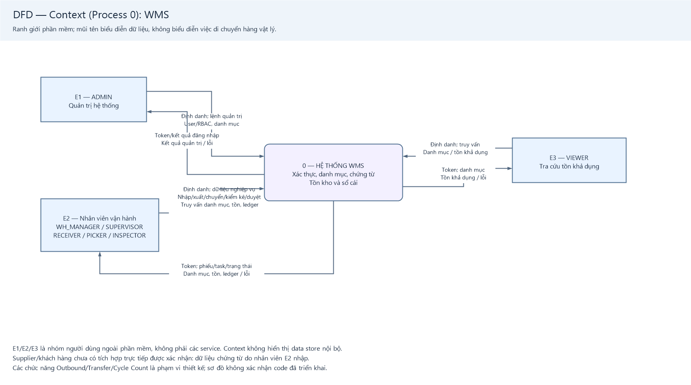
- E1/E2/E3 là nhóm người dùng ngoài phần mềm, không phải các service. Context không hiển thị data store nội bộ.
- Supplier/khách hàng chưa có tích hợp trực tiếp được xác nhận: dữ liệu chứng từ do nhân viên E2 nhập.
- Các chức năng Outbound/Transfer/Cycle Count là phạm vi thiết kế; sơ đồ không xác nhận code đã triển khai.
DFD — Level 1: Phân rã hệ thống WMS
Process 1–5 là phân rã Process 0. Mọi lệnh bảo vệ cần context xác thực + permission/scope trước khi xử lý.
Source ch?nh s?a ? PNG ? SVG / ph?ng to
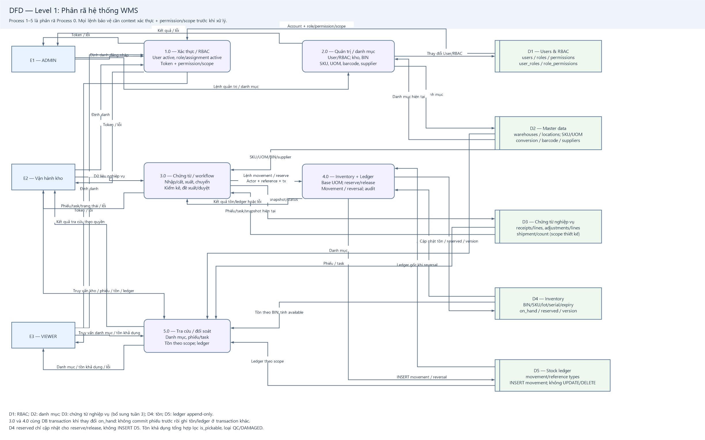
- D1: RBAC; D2: danh mục; D3: chứng từ nghiệp vụ (bổ sung tuần 3); D4: tồn; D5: ledger append-only.
- 3.0 và 4.0 cùng DB transaction khi thay đổi on_hand: không commit phiếu trước rồi ghi tồn/ledger ở transaction khác.
- D4 reserved chỉ cập nhật cho reserve/release, không INSERT D5. Tồn khả dụng tổng hợp lọc is_pickable, loại QC/DAMAGED.
BPMN — Đăng nhập, token và phân quyền
Áp dụng cho mọi role. Mỗi API bảo vệ kiểm tra lại user ACTIVE và assignment/role ACTIVE.
Source ch?nh s?a ? PNG ? SVG / ph?ng to
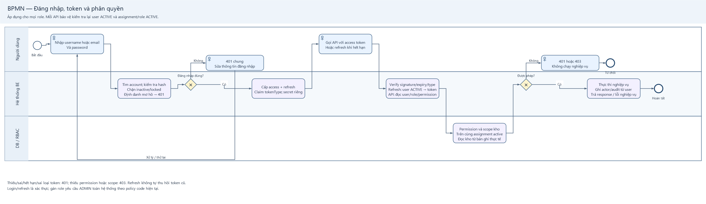
- Thiếu/sai/hết hạn/sai loại token: 401; thiếu permission hoặc scope: 403. Refresh không tự thu hồi token cũ.
- Login/refresh là xác thực; gán role yêu cầu ADMIN toàn hệ thống theo policy code hiện tại.
BPMN — Quản trị và quản lý danh mục
Các loại request độc lập: không bắt user phải tạo kho/SKU trước mỗi lần vận hành.
Source ch?nh s?a ? PNG ? SVG / ph?ng to
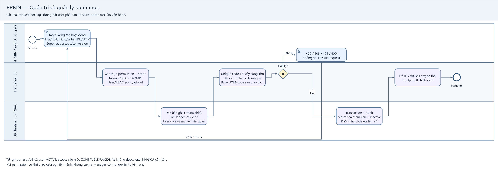
- Tổng hợp rule A/B/C: user ACTIVE, scope; cấu trúc ZONE/AISLE/RACK/BIN; không deactivate BIN/SKU còn tồn.
- Mã permission cụ thể theo catalog hiện hành; không suy ra Manager có mọi quyền từ tên role.
BPMN — Xuất hàng: Reserve, Pick và Ship
LUỒNG THIẾT KẾ. Tài liệu có PICK_OUT/PICK_IN/SHIP; chưa khẳng định đã có đủ API.
Source ch?nh s?a ? PNG ? SVG / ph?ng to
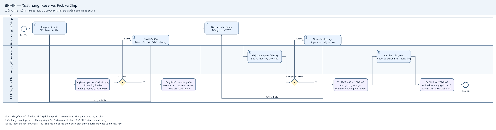
- Pick là chuyển vị trí: tổng kho không đổi. Ship trừ STAGING: tổng kho giảm đúng lượng giao.
- Thiếu hàng: báo Supervisor, không tự ghi đủ. Partial/cancel, chọn lô và FEFO cần contract riêng.
- Tài liệu kiểm thử ghi “PICK/SHIP -30” còn mơ hồ; sơ đồ chọn phân tách theo movement types và ghi chú này.
BPMN — Điều chuyển giữa hai kho
LUỒNG THIẾT KẾ. TRANSIT vẫn là đề xuất chưa được Domain B xác nhận; không vẽ ghi tồn transit như đã chốt.
Source ch?nh s?a ? PNG ? SVG / ph?ng to
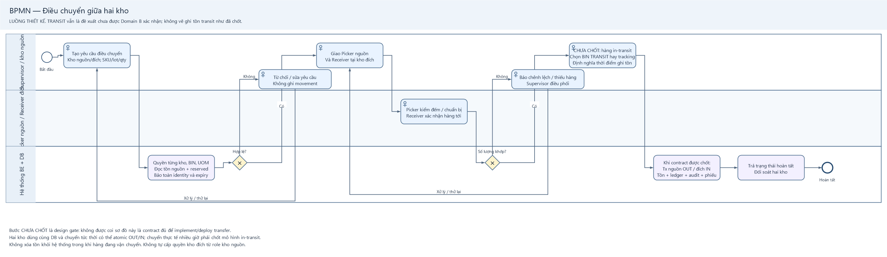
- Bước CHƯA CHỐT là design gate: không được coi sơ đồ này là contract đủ để implement/deploy transfer.
- Hai kho dùng cùng DB và chuyển tức thời có thể atomic OUT/IN; chuyển thực tế nhiều giờ phải chốt mô hình in-transit.
- Không xóa tồn khỏi hệ thống trong khi hàng đang vận chuyển. Không tự cấp quyền kho đích từ role kho nguồn.
BPMN — Kiểm kê và kiểm tra chất lượng
Luồng team theo tài liệu mới; nối sang BPMN Adjustment. Không tự sửa inventory từ kết quả đếm.
Source ch?nh s?a ? PNG ? SVG / ph?ng to
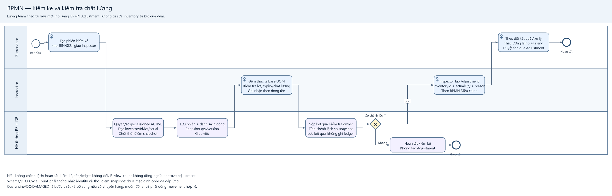
- Nếu không chênh lệch: hoàn tất kiểm kê, tồn/ledger không đổi. Review count không đồng nghĩa approve adjustment.
- Schema/DTO Cycle Count phải thống nhất identity và thời điểm snapshot; chưa mặc định code đã đáp ứng.
- Quarantine/QC/DAMAGED là bước thiết kế bổ sung nếu có chuyển hàng; muốn đổi vị trí phải dùng movement hợp lệ.
BPMN — Tra cứu tồn, sổ cái và mã hàng
Bao phủ Viewer và người vận hành; QR là tem SKU/UOM, không tự chứa lot/expiry khi payload chưa thiết kế.
Source ch?nh s?a ? PNG ? SVG / ph?ng to
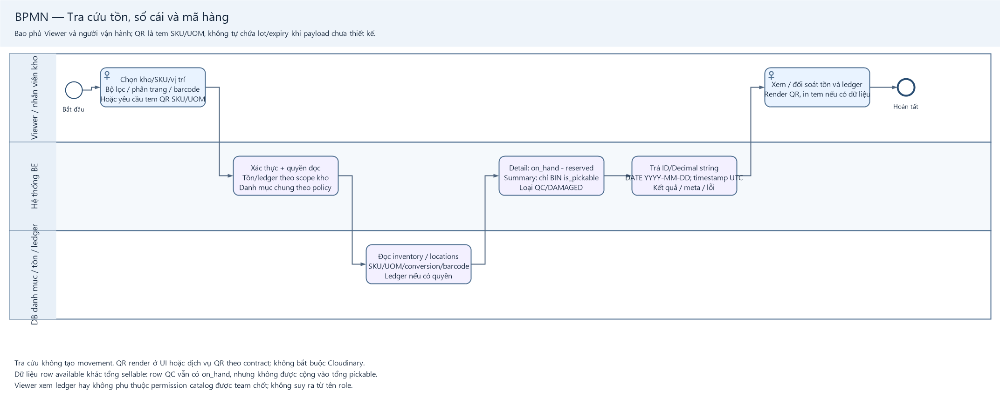
- Tra cứu không tạo movement. QR render ở UI hoặc dịch vụ QR theo contract; không bắt buộc Cloudinary.
- Dữ liệu row available khác tổng sellable: row QC vẫn có on_hand, nhưng không được cộng vào tổng pickable.
- Viewer xem ledger hay không phụ thuộc permission catalog được team chốt; không suy ra từ tên role.
BPMN — Sửa sai bằng bút toán đảo
ADMIN hoặc người được cấp STOCK_LEDGER.REVERSE; không UPDATE/DELETE dòng sổ cái cũ.
Source ch?nh s?a ? PNG ? SVG / ph?ng to
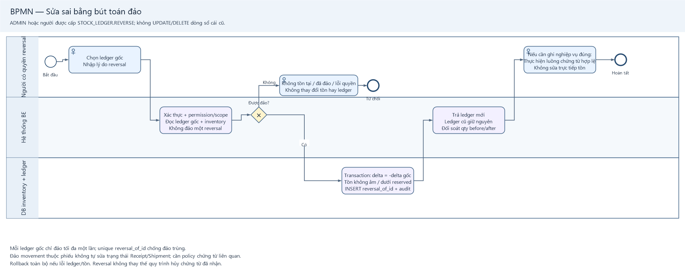
- Mỗi ledger gốc chỉ đảo tối đa một lần; unique reversal_of_id chống đảo trùng.
- Đảo movement thuộc phiếu không tự sửa trạng thái Receipt/Shipment; cần policy chứng từ liên quan.
- Rollback toàn bộ nếu lỗi ledger/tồn. Reversal không thay thế quy trình hủy chứng từ đã nhận.